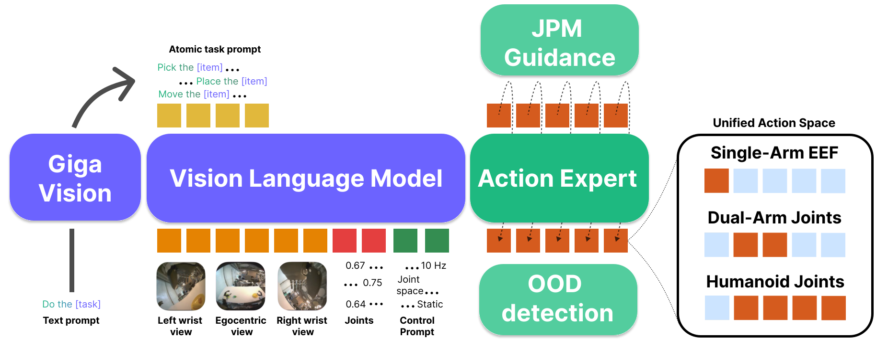

We introduce Green-VLA, a staged Vision–Language–Action framework for real-world deployment on the humanoid Green robot, while maintaining generalization across diverse embodiments. Green-VLA follows a five-stage curriculum: (L0) foundational VLMs, (L1) multimodal grounding, (R0) multi-embodiment pretraining, (R1) embodiment-specific adaptation, and (R2) RL-based policy alignment. Progression builds semantic and physical priors, learns shared affordances, and aligns policies for long-horizon execution beyond behavior cloning. At its core is a unified data and control stack for robot fleets.
A scalable data-processing pipeline including DataQA and temporal-alignment filters and synchronizes 3,000 hours of demonstrations; a unified, embodiment-aware action interface enables a single policy to control humanoids, mobile manipulators, and fixed-base arms; and the VLA controller is enhanced with episode-progress prediction, out-of-distribution detection, and a joint-prediction-based guidance module that generalizes to unseen objects. Optimized for the Green humanoid, Green-VLA generalizes in a zero-shot manner to new embodiments and achieves state-of-the-art performance across bimanual systems and benchmarks, with RL alignment providing gains in success rate, robustness, and long-horizon efficiency.

Green-VLA is a ~5B-parameter Vision-Language-Action model. We use Qwen3-VL (4B) as the vision–language backbone, augmented with a dedicated flow-matching action expert and lightweight auxiliary heads. The architecture features:
The training follows a staged curriculum: (L0) base VLM → (L1) web/multimodal pretraining for physical world understanding → (R0) general robotics pretraining on 3,000+ hours of demonstrations → (R1) embodiment-specific supervised fine-tuning → (R2) RL-based policy alignment. This progression builds semantic priors, learns shared affordances, and aligns policies for robust real-world execution.
Below are example results demonstrating our method on various scenes.
| Model | Visual Matching | Variant Aggregation | #Overall | ||||||||
|---|---|---|---|---|---|---|---|---|---|---|---|
| Drawer | Move near | Pick Coke | Apple | AVG VM | Drawer | Move near | Pick Coke | Apple | AVG VA | Average | |
| π0 (Fine-tune) | 38.3 | 65.3 | 72.7 | 0.0 | 44.1 | 25.6 | 63.7 | 75.2 | 0.0 | 41.1 | 42.6 |
| π0.5 (Fine-tune) | 57.9 | 72.5 | 86.7 | 0.0 | 54.3 | 50.5 | 73.5 | 87.4 | 0.0 | 52.8 | 53.6 |
| X-VLA | 64.4 | 84.6 | 93.7 | 18.5 | 65.3 | 43.7 | 78.8 | 96.1 | 30.7 | 62.3 | 63.8 |
| GR00T-N1.6 | 61.1 | 73.8 | 95.3 | 13.0 | 60.8 | 59.5 | 68.3 | 89.6 | 23.3 | 60.2 | 60.5 |
| Magma | 62.5 | 68.3 | 74.3 | 13.0 | 54.5 | 60.3 | 76.9 | 70.8 | 32.8 | 60.2 | 57.4 |
| EO-1 | 71.3 | 83.8 | 98.0 | 52.8 | 76.5 | 91.6 | 81.7 | 55.0 | 23.8 | 63.0 | 69.8 |
| OpenVLA | 35.6 | 46.2 | 16.3 | 0.0 | 24.5 | 17.7 | 47.7 | 54.5 | 0.0 | 30.0 | 27.2 |
| RT-1-X | 59.7 | 31.7 | 56.7 | 40.7 | 47.2 | 49.0 | 32.3 | 29.7 | 40.7 | 37.9 | 42.6 |
| Flower | - | - | - | - | - | -- | -- | -- | -- | -- | 42.4 |
| Green-VLA (Paligemma 3B) | |||||||||||
| Green-VLA(R0) | 62.9 | 61.2 | 90.4 | 0.0 | 53.6 | 33.5 | 38.1 | 75.5 | 0.0 | 36.7 | 45.1 |
| Green-VLA(R1) | 47.0 | 58.7 | 95.0 | 0.0 | 50.1 | 34.1 | 42.9 | 92.1 | 16.0 | 46.2 | 48.1 |
| Green-VLA(R2) | 61.0 | 50.8 | 98.1 | 0.0 | 52.4 | 51.6 | 71.2 | 98.2 | 28.0 | 62.3 | 57.3 |
| Green-VLA (Qwen3-VL-4B-Instruct) | |||||||||||
| Green-VLA(R1) | 64.8 | 75.8 | 85.7 | 81.5 | 77.0 | 35.7 | 71.9 | 92.6 | 66.7 | 66.7 | 71.8 |
| Model | Pick | Success | ||||||||
|---|---|---|---|---|---|---|---|---|---|---|
| Spoon | Cubes | Eggplant | Carrot | AVG Grasp | Spoon | Cubes | Eggplant | Carrot | AVG Success | |
| π0 (Fine-tune) | 45.8 | 50.0 | 91.6 | 25.0 | 53.1 | 29.1 | 16.7 | 62.5 | 0.0 | 27.1 |
| π0.5 (Fine-tune) | 66.7 | 16.7 | 50.0 | 50.0 | 45.9 | 29.2 | 0.0 | 41.7 | 41.7 | 28.2 |
| OpenVLA | 4.1 | 12.5 | 8.3 | 33.0 | 14.5 | 0.0 | 0.0 | 4.1 | 0.0 | 1.0 |
| RT-1-X | 16.7 | 8.3 | 0.0 | 20.8 | 11.5 | 0.0 | 0.0 | 0.0 | 4.2 | 1.1 |
| Flower | -- | -- | -- | -- | -- | 71.0 | 8.0 | 88.0 | 13.0 | 45.0 |
| DB-MemVLA | 91.7 | 83.3 | 79.2 | 100.0 | 88.6 | 85.1 | 57.6 | 100.0 | 50.0 | 73.2 |
| X-VLA | 95.8 | 79.2 | 62.5 | 75.0 | 78.1 | 91.7 | 37.5 | 62.5 | 70.8 | 65.6 |
| Magma | 70.8 | 75.0 | 91.7 | 37.5 | 68.8 | 54.2 | 29.2 | 83.3 | 33.3 | 50.0 |
| GR00T-N1.6 | 58.3 | 20.8 | 100.0 | 54.2 | 58.3 | 41.7 | 0.0 | 62.5 | 33.3 | 34.4 |
| EO-1 | - | - | - | - | - | 63.6 | 81.8 | 90.9 | 54.5 | 72.7 |
| Green-VLA (Paligemma 3B) | ||||||||||
| Green-VLA(R0) | 66.7 | 91.7 | 91.7 | 50.0 | 75.0 | 33.3 | 33.3 | 88.5 | 25.0 | 45.0 |
| Green-VLA(R1) | 75.0 | 91.7 | 87.5 | 50.0 | 76.1 | 66.7 | 37.5 | 79.2 | 37.5 | 55.2 |
| Green-VLA(R2) | 87.5 | 95.8 | 91.7 | 91.6 | 91.7 | 90.1 | 52.6 | 84.8 | 89.0 | 79.1 |
| Green-VLA (Qwen3-VL-4B-Instruct) | ||||||||||
| Green-VLA(R1) | 91.7 | 91.7 | 100.0 | 75.0 | 89.6 | 79.2 | 58.3 | 91.7 | 62.5 | 72.9 |
| Green-VLA(R2) | 90.6 | 99.0 | 99.0 | 89.6 | 94.6 | 80.2 | 70.8 | 94.8 | 76.1 | 80.5 |
| Metric | π0 R1 | Green-VLA R1 (Paligemma 3B) |
Green-VLA R1 (Qwen3-VL-4B) |
Flower R1 | Green-VLA R2 (Qwen3-VL-4B) |
Green-VLA R2 (Paligemma 3B) |
|---|---|---|---|---|---|---|
| ACL | 3.6 | 4.18 | 4.27 | 4.53 | 4.57 | 4.63 |
| Pick [item] | Place in [basket] | Pick [item] from [basket] | Give [item] to user | Hand over [item] | Clean full [table] | Average |
|---|---|---|---|---|---|---|
| 98 | 100 | 77 | 99 | 84 | 87 | 90 |
| Item | R1 Success | R2 Success | Gain |
|---|---|---|---|
| Cookies | 30% | 82% | +52% |
| Deodorant | 62% | 88% | +26% |
| Shampoo | 12% | 22% | +10% |
| Pet food | 25% | 68% | +43% |
| Metric | Base | + Guidance | Gain |
|---|---|---|---|
| ID Coarse | 62 | 95 | +33 |
| ID SKU | 36 | 93 | +57 |
| OOD | 10 | 72 | +62 |
@misc{apanasevich2026greenvlastagedvisionlanguageactionmodel,
title={Green-VLA: Staged Vision-Language-Action Model for Generalist Robots},
author={I. Apanasevich and M. Artemyev and R. Babakyan and P. Fedotova and D. Grankin and E. Kupryashin and A. Misailidi and D. Nerus and A. Nutalapati and G. Sidorov and I. Efremov and M. Gerasyov and D. Pikurov and Y. Senchenko and S. Davidenko and D. Kulikov and M. Sultankin and K. Askarbek and O. Shamanin and D. Statovoy and E. Zalyaev and I. Zorin and A. Letkin and E. Rusakov and A. Silchenko and V. Vorobyov and S. Sobolnikov and A. Postnikov},
year={2026},
eprint={2602.00919},
archivePrefix={arXiv},
primaryClass={cs.RO},
url={https://arxiv.org/abs/2602.00919},
}